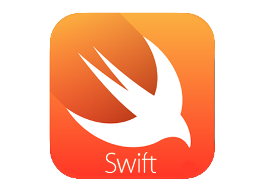
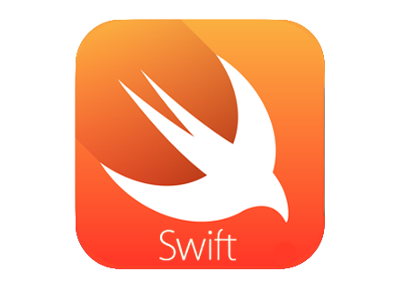

-
Experiencia en el análisis de requerimientos de software con diversas metodologías.
-
Diseño de software estructuado y orientado a objetos.
-
Soporte técnico a computadoras y equipos periféricos. Sea mantenimiento preventivo o correctivo.
-
Elaboración de diseño conceptual y lógico para bases de datos así como la implementación en SQL de las mismas.
-
Experiencia con distintas distribuciones del sistema operativo GNU/Linux.
-
Desarrollo en las áreas a fines de recursos humanos en las organizaciones.
Experiencia en la elaboración, desarrollo e implementación de TIC's para optimizar los procesos en el área mencionada. -
Desarrollo de modelos de análisis, casos de uso, colaboraciones y diagramas de clases en UML.
-
Manejo de software ofimático como Microsoft Word, Microsoft Excel, etc.


 
